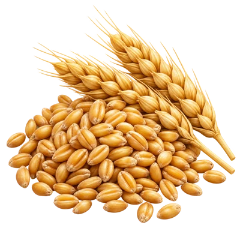
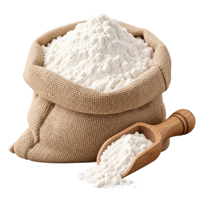

从小菜地，到香喷喷的一餐
快乐厨房
种蔬菜，养动物，用自己的收成做一道菜。
收成和养殖食材都在这里。选一道喜欢的菜，来当小厨师！
OUR FAMILY TABLE
家里的餐桌
餐桌最多摆 15 道菜，多出来的先放到菜品架上。盘子可以拖动，点一点或移上去听菜名。
餐桌等着你的第一道菜。选一份菜谱，一起来做饭吧！
FARM TO TABLE
我的食材仓库
这里是可以用于做菜的份数。小麦先在小磨坊磨成面粉，再做蛋糕、饼和甜点；米、油、调味料由厨房免费提供；葵花收成在厨房用作葵花籽。

→
99 LITTLE DISHES
我的菜品勋章
选一道菜，配齐食材，选好做法，按对应做法攒满 10 格进度，再端上桌点亮勋章。已经点亮的菜也可以再做。较少见的旧搭配收在“往日菜谱”里，已有勋章和餐桌上的菜都会保留。
家长 · 农场到厨房的玩法
学习星星兑换种子、动物宝宝、水、肥料和饲料。收获作物及养殖产出的肉、蛋、奶进入食材库存。每道菜消耗标明的食材各一份，首次完成点亮一枚永久勋章。收成、养殖和做菜不产生额外星星。库存不足不会消耗材料；配菜和选做法也不扣材料，按对应做法积满 10 格进度后才能端上桌；上桌成功时统一扣除并保存勋章。以前做过的菜自动显示在餐桌上，同一道菜重复制作会累计次数。
领取肉类时结束这只动物的养殖并空出小窝，蛋奶领取后伙伴保持成年，再喂养三次就可重新产出。这里用食材包表示肉类，不展示处理动物的过程。没有生病、饥饿惩罚、限时任务。原学习记录、奖励余额、作物和装饰保留。下载全部记录备份。